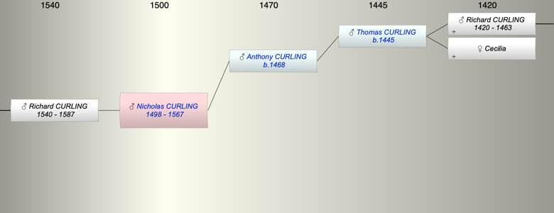

| [Index] |
| Nicholas CURLING (1498 - 1567) |
|  |
| b. abt 1498 |
| d. 1567 at St Lawrence aged 69 |
| Parents: |
| Anthony CURLING (1468 - ) |
| Siblings (3): |
| Robert CURLING (1490 - 1542) |
| Anthony CURLING (1495 - 1564) |
| John CURLING (1495 - 1573) |
| Children (1): |
| Richard CURLING (1540 - 1587) |
| Grandchildren (2): |
| Nicholas CURLING (1564 - ), John CURLING (1582 - ) |
| Events in Nicholas CURLING (1498 - 1567)'s life | |||||
| Date | Age | Event | Place | Notes | Src |
| abt 1498 | Nicholas CURLING was born | ||||
| abt 1540 | 42 | Birth of son Richard CURLING | |||
| 1567 | 69 | Nicholas CURLING died | St Lawrence | buried St Lawrence 14 Oct 1567 | |
| Created on a Mac™ using iFamily for Mac™ on 8 Oct 2023 |